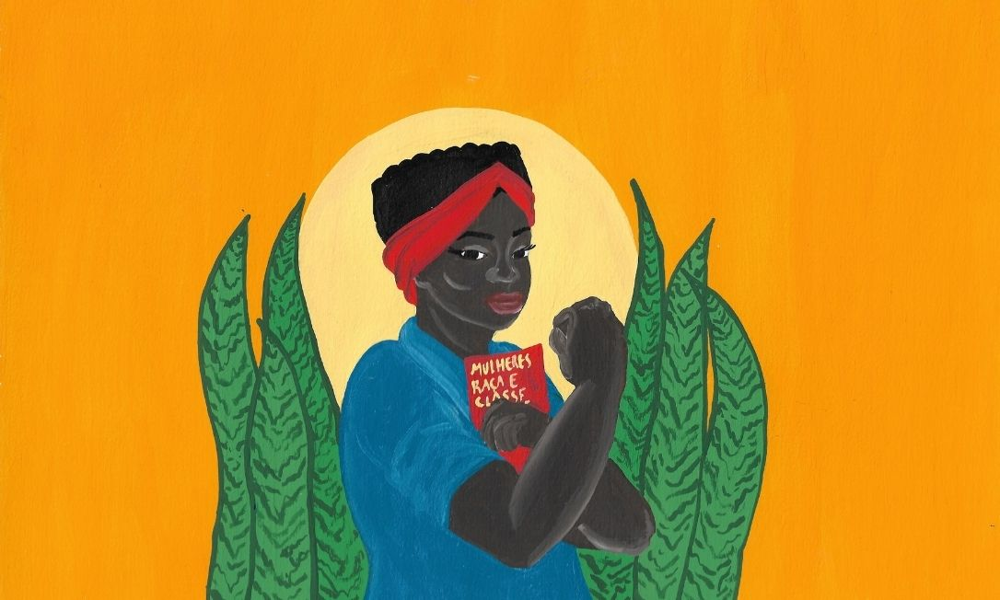

O Feminismo Negro é um movimento social e um segmento protagonizado por mulheres negras, com o objetivo de promover e trazer visibilidade às suas pautas e reivindicar seus direitos.
No Brasil, seu início se deu no final da década de 1970, a partir de uma forte demanda das mulheres negras feministas: o Movimento Negro tinha sua face sexista, as relações de gênero funcionavam como fortes repressoras da autonomia feminina e impediam que as ativistas negras ocupassem posições de igualdade junto aos homens negros; por outro lado, o Movimento Feminista tinha sua face racista, preterindo as discussões de recorte racial e privilegiando as pautas que contemplavam somente as mulheres brancas.
O problema da mulher negra se encontrava na falta de representação pelos movimentos sociais hegemônicos. Enquanto as mulheres brancas buscavam equiparar direitos civis com os homens brancos, mulheres negras carregavam nas costas o peso da escravatura, ainda relegadas à posição de subordinadas; porém, essa subordinação não se limitava à figura masculina, pois a mulher negra também estava em posição servil perante à mulher branca.
A partir dessa percepção, a conscientização a respeito das diferenças femininas foi ganhando cada vez mais corpo. Grandes nomes da militância feminina negra foram fazendo história, a exemplo de Lélia Gonzalez e Sueli Carneiro.
A atenção e a produção de conteúdo foram dedicadas a discussões de raça e classe, buscando romper uma zona de conforto que o ativismo feminista branco cultivava, especialmente aquele que limitava sua ótica aos problemas das mulheres de boa condição financeira e acesso à educação.
No entanto, isso não foi suficiente para que o Feminismo Hegemônico passasse a reconhecer as ativistas negras e resgatasse as memórias das mulheres que lutaram na linha de frente de diversos movimentos sociais. Para as meninas e mulheres que vêm a conhecer os movimentos pelos direitos da mulher, há um vácuo de modelos negros nos quais se espelhar, mas não por falta de pessoas atuantes e sim por causa da invisibilidade.
É preciso que haja a iniciativa de buscar figuras inspiracionais, caso contrário os nomes mais celebrados serão extremamente limitados.
Rompimento e necessidade do feminismo negro
A cisão das mulheres negras com o movimento feminista hegemônico nunca foi fácil. Por deterem o domínio racial e contarem com maior número de lideranças consolidadas, as feministas brancas resistem às questões das mulheres negras. Grande parte das reclamações relatadas são repetições de um único discurso: as negras criam caso, plantam confusão e discórdia, enxergam racismo onde há boas intenções e não são compreensivas.
Isso acontece porque há a tendência de englobar as mulheres a partir de uma única característica em comum: o gênero. Supondo que todas passam pelos mesmos problemas e desejam as mesmas coisas, o Feminismo que não se atenta para as especificidades de cada grupo feminino acaba atuando sob omissão, muitas vezes deliberada. As necessidades das mulheres negras são muito peculiares e sem que seja feita uma profunda análise do racismo brasileiro, é impossível atender às urgências do grupo.
A luta das feministas negras é uma batalha contínua para nivelar seu lugar ao lugar das mulheres brancas. Isso, por si, levanta a importante reflexão sobre a representação feminina na mídia, seu espaço no mercado de trabalho, o lugar de vítima da violência sexual, o protagonismo da maternidade, entre outros temas, pois se há tanto por que as mulheres brancas precisam lutar, é bastante preocupante o fato de que as mulheres negras nem sequer conquistaram igualdade quando em comparação com outros indivíduos do seu próprio gênero.
Para contextualizar os abismos raciais que separam as mulheres, é possível usar alguns dados de pesquisas institucionais do IBGE, IPEA e OIT.
Mercado de trabalho
Em 2013, a PEC 66 foi aprovada, transformando em lei a reivindicação de empregadas domésticas, que há décadas lutavam por direitos trabalhistas.
Não por acaso, as mulheres negras compõem a maioria de trabalhadoras do lar (61,7%) e mesmo com o avanço trazido pela Proposta de Emenda Constitucional, a realidade ainda permanece distante do desejado.
As funcionárias que exigem seus direitos muitas vezes acabam despedidas e, sob ameaças e assédio moral, é difícil efetivar a conquista.
Enquanto mulheres brancas lutam para que seus salários (média de R$ 797,00) sejam equiparados aos salários dos homens brancos (média de R$ 1.278,00), as mulheres negras recebem ainda menos (média de R$ 436,00).
Conseguir um emprego formal, uma boa colocação e ingressar no ensino superior também são dificuldades típicas daquelas que possuem a pele negra.
Outra face perversa do racismo atrelado ao sexismo é a jornada tripla de trabalho.
As trabalhadoras se distanciam de seus lares e filhos para que possam prover sustento, muitas vezes cuidando dos filhos das mulheres com melhor condição financeira, e, por não possuírem os recursos, não podem contratar alguém para prestar assistência às crianças e fazer manutenção em suas próprias casas.
As creches não atendem à demanda e as funções das mulheres pobres se acumulam. Chegar em casa após um longo dia de labuta e, ainda assim, precisar cumprir mais tarefas domésticas é uma realidade exaustiva que pode ser relatada por milhares de mulheres negras.
Aborto e direitos reprodutivos
No Brasil, o aborto é legal e gratuito somente se a gravidez for gerada por um estupro, causar risco de morte para a mãe ou no caso do feto ser anencéfalo.
Apesar disso, mulheres negras e pobres encontram resistência do sistema de saúde, sendo coagidas por equipes médicas e por religiosos de suas comunidades.
Por não contarem com suporte e não terem recursos financeiros que paguem clínicas particulares, muitas dessas mulheres jamais conseguem realizar o aborto.
Se o foco é o aborto por escolha, ainda não legalizado em nosso país, as mulheres negras também integram a parcela de maiores vítimas da ilegalidade
Por causa das complicações geradas por abortos clandestinos, as mulheres negras morrem em números altíssimos e também estão mais vulneráveis ao indiciamento criminal, caso sobrevivam.
A violência obstétrica também é um marco na vida das mães negras e pobres. Negligenciadas nas filas do SUS, elas são colocadas em segundo plano para que mulheres brancas – consideradas mais frágeis e sensíveis – sejam priorizadas, independente da ordem de chegada.
Violência doméstica e sexual
A cor é fator relevante quando analisamos os casos de agressão e assassinato por parte de companheiros e ex-companheiros.
As negras são mais de 60% das vítimas de feminicídio, exatamente porque não contam com assistência adequada e estão mais vulneráveis aos abusos das próprias autoridades.
Já no aspecto da sexualidade, das mulheres brancas é esperado o comportamento moderado e sensualidade com limitações, porém, as mulheres chamadas de “mulatas” são amplamente exotificadas e tratadas como objetos disponíveis para a exploração.
O argumento de quem enxerga as mulheres negras como mais disponíveis para investidas sexuais é de que elas são mais provocantes, que seus corpos suportam atos mais intensos ou até mesmo que não podem negar os assédios.
A cultura do estupro é vigente desde a colonização do Brasil, quando mulheres negras foram estupradas por homens brancos e usadas em políticas oficiais de miscigenação, com o fim de branquear a população.
A mentalidade daquela época se mantém forte na contemporaneidade e é por isso que são tão naturalizados aspectos culturais como a escolha anual da Globeleza.
A posição de mulata que expõe seu corpo é tão relacionada exclusivamente à mulher negra, que nem sequer se estende o concurso sexista para mulheres de outras raças.
Enquanto as mulheres brancas também são vítimas de violência e estupro, é preciso salientar as formas distintas pelas quais o machismo atua: as brancas são violentadas exclusivamente por seu gênero, as negras também se tornam vítimas do preconceito racial.
Um bom exemplo é a Marcha das Vadias, atualmente realizada em quase todos os estados brasileiros.
Há diversos grupos do Feminismo Negro que não participam dos protestos e criticam o uso de palavras como “vadia” e “puta”, afirmando que as mesmas não podem ser ressignificadas pelas negras, pois o estigma que carregam é muito forte e o mais urgente é romper representações hipersexualizadas.
Partindo desse pressuposto, o melhor seria lutar para ser reconhecida como ser humano intelectual, capaz de conquistas diversas e ocupação em papéis ilimitados.
Não obstante, esse posicionamento não é unânime; diversas mulheres negras participam das marchas e ocupam posições nas equipes de organização.
Padrão de beleza e mídia
Cabelos lisos e loiros, narizes finos, bochechas rosadas, olhos azuis e axilas claras são alguns exemplos de como a estética ocidental celebra características brancas como melhores e mais belas.
Por causa dessa padronização, atrizes negras são minoria absoluta e quase nunca são convidadas para estrelarem na televisão.
Embora a redução da mulher ao papel de “musa” seja machista, vale a pena dedicar um pouco de reflexão ao racismo explícito que passa todos os dias sem muitos protestos.
A posição não é ideal para nenhuma mulher, mas as causas que levam a exclusão das mulheres negras são inegavelmente racistas.
Mulher negra X homem negro
O debate interno dentro do Feminismo Negro e entre pessoas negras sobre as múltiplas faces do machismo é bastante inflamado.
Grande parte da luta feminina se dá contra o sexismo, a imposição de papéis e a violência.
Só que o problema é ainda mais profundo e há um incômodo severo por parte de muitas mulheres negras, que se sentem rejeitadas pelos homens negros.
A ideia de que são sexualmente usáveis e descartáveis é tão forte que a confirmação rompe as paredes dos grupos militantes:
o Censo 2010 revelou que as mulheres negras são as que menos se casam, sendo a maioria na categoria de “celibato definitivo”, ou seja, que nunca tiveram um cônjuge.
Essa discussão é muito complexa e delicada, já que perpassa o desconforto em face do racismo e a solidão que as mulheres negras enfrentam.
Por isso não é incomum ver protestos e críticas incisivas diante de um rapper ou jogador famoso que apresente sua namorada loira.
Uma outra perspectiva das relações entre mulheres e homens negros se dá pelos âmbitos familiares.
Uma mulher branca de classe média dificilmente se preocupará com a violência policial que ceifará a vida do irmão, pai ou filho.
Essa é uma pauta muito precisa das feministas negras e revela como até mesmo as relações de gênero se desdobram de maneiras pouco delimitadas pelo puro debate sobre o machismo.
Apesar dos assuntos que dizem respeito à heterossexualidade, há também a necessidade de se abordar as vivências das mulheres negras que são lésbicas e bissexuais, que precisam lidar com investidas invasivas, lesbofobia e discriminação.
A conscientização
Os dados citados são apenas alguns exemplos das disparidades entre mulheres brancas e negras, mas são fundamentais para se compreender a necessidade de uma vertente específica dentro do Feminismo.
Afunilar demandas é uma prática comum dentro dos movimentos sociais.
Não há porque manter uma falsa impressão de homogeneização quando a diversidade é capaz de produzir muito mais união e potencial comunitário.
Reconhecendo e respeitando as diferenças e características subjetivas das mulheres que fazem a luta feminista, é possível contemplar as necessidades urgentes de cada categoria.
A diversidade sexual, as variáveis nas identidades de gênero, os fatores de classe, raça e etnia, entre outras especificidades, estão se transformando em abordagens prioritárias que exigem conscientização imediata.
O Feminismo Negro existe, desde seu surgimento, para emergir as questões periféricas repudiadas pelo status quo.
Ele é, em primeiro lutar, um ato de resistência motivado pela existência livre.
A população negra é mais de 50% do Brasil; portanto, o esquecimento dessas mulheres seria, no mínimo, o esquecimento de uma importante parcela de cidadãs.
Dia 25 de Julho - Dia da mulher negra, latino-americana e caribenha
“Quando a mulher negra se movimenta, toda a estrutura da sociedade se movimenta com ela” - Angela Davis
A população negra no Brasil corresponde a maioria, mais precisamente 54%, segundo o IBGE.
De acordo com a Associação de Mujeres Afro, na América Latina e no Caribe, 200 milhões de pessoas se identificam como afrodescendentes.
Porém, tanto no Brasil quanto fora dele, essa parcela populacional também é a que mais sofre com a pobreza: três em cada quatro são pessoas negras, ainda segundo o IBGE.
Os dados sobre violência e desigualdade, de acordo com o Mapa da Violência, demonstram essa e outras realidades que atingem massivamente a população negra (com destaque no texto à condição da mulher negra).
Em 1992, um grupo decidiu que era preciso se organizar de alguma forma para reverter esses dados e que uma solução só poderia surgir da própria união entre mulheres negras.
Assim, elas organizaram o primeiro Encontro de Mulheres Negras Latinas e Caribenhas em Santo Domingo, na República Dominicana, onde levaram ao evento, discussões sobre os diversos problemas e alternativas de como resolvê-los.
A partir desse encontro, nasceu a Rede de Mulheres Afro-latino-americanas e Afro-Caribenhas.
A Rede, junto à Organização das Nações Unidas (ONU) lutou para o reconhecimento do dia 25 de julho como o Dia Internacional da Mulher Negra, Latino-Americana e Caribenha.
O 25 de julho não é apenas uma data de celebração, é uma data em que as mulheres negras, indígenas e de comunidades tradicionais refletem e fortalecem as organizações voltadas às mulheres negras e suas diversas lutas.
No Brasil, em 2 de junho de 2014, foi instituído por meio da Lei nº 12.987, o dia 25 de julho como o Dia Nacional de Tereza de Benguela e da Mulher Negra, homenageando uma das principais mulheres, símbolo de resistência e importantíssima liderança na luta contra a escravização.
Conceição Evaristo - ENTREVISTA
Escritora, professora e ativista brasileira
Brasileiro é preconceituoso e supremacia branca é contraditória
JORNALISTA: Conceição Evaristo, foram 20 anos até publicar seu primeiro livro, o romance “Ponciá Vicêncio”, que narra a infância de uma menina pobre, descendente de escravos.
Tanto ele, quanto o segundo livro, “Becos de Memória” (Editora Pallas), foram traduzidos para o francês.
Na Flip (Festa Literária Internacional de Paraty) deste ano a senhora foi celebrada pelos ouvintes de sua mesa e por onde passava.
Também já foi homenageada pela Câmara dos Vereadores do Rio de Janeiro com a medalha Pedro Ernesto, dedicada a quem mais se destaca na sociedade brasileira ou internacional.
A senhora está feliz com tudo isso?
CONCEIÇÃO: Sem sombra de dúvidas. Me sinto presenteada nos meus 70 anos, e num momento que não esperava que tudo tomasse esse rumo. É um momento de celebração. Não só para mim, mas para minha família e as mulheres negras que se sentem também contempladas com meu sucesso, com meu texto, minha trajetória. Na verdade, não caminho sozinha.
Não quero que a exceção fortaleça o discurso da meritocracia.
JORNALISTA: Mulheres negras que se espelham na senhora, também esperam por um reconhecimento. Não é fácil na sociedade em que vivemos chegar onde chegou.
CONCEIÇÃO: Não. Embora escrevesse desde sempre, minha primeira publicação foi aos 44 anos com o grupo Quilomboje, de escritores e escritoras afro-brasileiros que bancam suas publicações.
Se tivesse nascido em outra condição social, se fosse mulher branca passaria por todas essas dificuldades? Tenho dito que sou uma história de exceção.
Essas histórias de exceção têm que ser questionadas.
Uma vez, no salão do livro de Paris, eu disse que minha história era perigosa, porque ela pode servir de fundamento para a questão da meritocracia.
De acharmos que: se trabalhar muito, se houver esforço, você consegue.
A meritocracia incentiva uma ascensão pessoal.
E a minha questão é voltada para a reflexão dentro do coletivo, como mulher negra, ligada a movimentos sociais.
JORNALISTA: A senhora acredita que histórias de exceção confirmam a regra?
CONCEIÇÃO: Sim. Mas que regras são essas que você vê uma mulher negra na literatura, um juiz negro, talvez um empresário negro, um casal negro fazendo sucesso na televisão?
Tem alguma coisa muito cruel na sociedade brasileira que provoca essas exceções.
Enquanto uma maioria branca detém mídia, capital e grandes postos nas grandes empresas.
Quais são, por exemplo, as altas patentes negras no Exército? Essas exceções têm que ser celebradas, e eu seria uma pessoa de uma falsa modéstia se não celebrasse, não me considerasse contemplada.
Mas não quero que a exceção fortaleça o discurso da meritocracia.
JORNALISTA: O rapper Emicida diz que só pelo fato dele existir muitas perguntas precisam ser feitas?
O que a senhora acha dessa afirmação?
CONCEIÇÃO: Tem uma certa coincidência com o que estou falando agora.
E uma dessas perguntas seria: que regras são essas que fazem com que os negros que conseguem “chegar lá” se transformem em frutas raras?
Enquanto não for normal, não for comum os negros terem as suas conquistas, tem alguma coisa aí que a gente precisa pensar mais profundamente.
Não pensar só no sucesso dessas pessoas negras, mas pensar qual a razão de as outras não alcançarem determinados patamares.
O negro fica visível em situações que o imaginário brasileiro não permite que ele esteja.
JORNALISTA: A senhora acha que a cor nos deixa invisíveis?
CONCEIÇÃO: Em determinadas situações.
No caso do negro, por exemplo, se você chega numa favela ou numa penitenciária e vê um grande número de negros, já está naturalizado.
Quando essas pessoas negras se encontram num habitat fora daquele que a sociedade considera normal para elas, aí causa espanto.
Não são mais invisíveis.
Elas são vistas, às vezes, por aqueles que têm uma atitude agressiva.
Não sei se você se lembra quando o Chico Buarque de Hollanda ficou incomodado quando o neto dele (filho do músico Carlinhos Brown) sofria racismo.
Ou seja, o negro fica visível em situações em que o imaginário brasileiro não permite que ele esteja.
JORNALISTA: Já passou por isso?
CONCEIÇÃO: Passo muito por essa situação.
Acontece quando viajo, nos aeroportos, principalmente quando vou num horário de grande fluxo de executivos, homens.
É muito comum me olharem de uma forma como se perguntassem: “O que você está fazendo aqui?”
JORNALISTA: E o que a senhora sente quando é confrontada com situações como essas?
CONCEIÇÃO: Certa vez, no avião, me sentei entre dois homens brancos. Um deles passou a me empurrar do braço da poltrona.
Me disse: “Já estou aqui no canto. A senhora quer que eu pule a janela?”.
Meu primeiro sentimento foi de calar.
Como é que eu ia enfrentar aquele senhor, que estava disputando o espaço comigo?
Respondi dizendo que ele devia ser uma pessoa muito educada e que permitiria que eu colocasse o braço ali.
No resto da viagem fiquei muito incomodada, pensando o que teria levado aquele senhor a me agredir.
Se fosse uma mulher branca, que o fizesse se recordar de sua, ele disputaria o braço da poltrona?
Alguém me disse que ele só era mal educado.
Não, na verdade naquele momento todo o racismo dele veio à tona.
São vários os sentimentos nessas horas, um deles o de dor.
Já entrei em restaurantes acompanhada por amigas brancas, e na hora de pagar a conta passam para uma delas, porque pressupõe-se que elas é que vão pagar.
JORNALISTA: Doutora em Literatura Comparada pela UFF (Universidade Federal Fluminense), a senhora nasceu em uma família de mulheres negras cozinheiras, faxineiras e empregadas domésticas.
Como escritora, a senhora faz reflexões sobre raça e gênero.
Diante do que comentou, acha que em geral o brasileiro é preconceituoso?
CONCEIÇÃO: É. Talvez a sociedade brasileira esteja menos cínica.
Hoje, brancos e negros, também não são todos, têm coragem de botar o dedo na ferida.
O Brasil sempre quis dar exemplo para os Estados Unidos e para a África do Sul de que não é racista.
Mas o brasileiro é racista, é preconceituoso em vários sentidos.
Mas a tendência hoje é de reconhecer, mas não sei se é de sanar e deixar de ser.
E o movimento negro tem uma importância muito grande.
Desde os anos 1980 a gente tem um discurso muito veemente no sentido de desconstruir a falsidade do mito da democracia racial brasileira.
Mudança parte de quem reivindica.
JORNALISTA: As mulheres brancas lutaram por autonomia contra o sistema patriarcal branco.
No Brasil, mulheres brancas mantêm até hoje esse sistema nas relações de patroa e empregada.
A senhora acredita que um dia isso possa mudar?
CONCEIÇÃO: Acredito, porque acho que tenho que ter esperança.
Conhecendo um pouco das lutas sociais, como militante, se eu não acreditar é jogar toda a minha crença fora.
Não sei se está perto de acontecer, mas acho que algumas mudanças a gente já percebe.
Toda mudança parte de quem reivindica.
Quem tem o status garantido não vai abrir mão dos seus privilégios, não vai mudar o comportamento.
Quando você pensa no próprio movimento feminista, se nós mulheres não ficarmos denunciando e enfrentando o machismo, o homem na comunidade dele também não vai mudar.
Não tenho dificuldade em afirmar que o feminismo das mulheres negras passa pelo enfrentamento com as mulheres brancas.
As mulheres brancas, mesmo tendo lutando contra o patriarcado, não tiveram nenhuma dificuldade de exercer o poder sobre as mulheres negras.
Então, é aquele que está subjugado que cria uma linha de desconforto para o outro.
A supremacia branca é muito contraditória
JORNALISTA: Como a senhora viu a recente polêmica questão de Charllotesville, nos EUA, onde supremacistas brancos e grupos antirracismo entraram em confronto?
CONCEIÇÃO: Nos Estados Unidos e na sociedade brasileira o racismo está tão entranhado que volta e meia eclode.
Então, temos sempre essa impressão do retrocesso. […]
O branco, quando afirma sua supremacia, se considera imbatível, com todos os direitos e numa posição superior.
Hoje, com tudo que se discute, as consequências com a questão de raça…
A história do holocausto judaico, por exemplo, ainda está muito viva para gente refletir.
Aí você vê não só uma política de extermínio, porque se a gente for pensar, no Brasil, Abdias Nascimento (dramaturgo e político) já falava do genocídio do negro.
E até que ponto o Estado brasileiro se preocupa com a mortandade de jovens negros?
JORNALISTA: Aqui, onde essa supremacia branca pode ser percebida?
CONCEIÇÃO: No Brasil há outras formas de a supremacia branca se afirmar.
E a supremacia branca é muito contraditória.
No caso das ações afirmativas, o que mais se fala é do sistema de cotas raciais (que têm como principal função a reparação de desigualdades econômicas, sociais e educacionais nas universidades, reservando vagas para o ingresso de cidadãos pretos, pardos e indígenas).
Alguns intelectuais brasileiros são contra o sistema de cotas.
Pessoas com o entendimento sobre a dívida que o Estado brasileiro tem com os povos africanos e indígenas, que na hora de tornar teoria em prática se valem dessa supremacia e não abrem mão mesmo.
Fazendo um paralelo com o que aconteceu nos Estados Unidos e o que acontece aqui, talvez os brancos norteamericanos sejam mais sinceros.
Não tenho esses elementos
JORNALISTA: Se vê escrevendo uma história em que a personagem central seja branca e o contexto não seja racial?
CONCEIÇÃO: Já pensei um pouco sobre isso.
Mas ainda não tenho esses elementos.
Em “Ponciá Vicêncio”, os brancos sempre aparecem como dominadores e os negros, entre aspas, dominados.
Em “Beco da Memória”, o coronel é o branco, o dominador.
Até agora as experiências históricas que tenho com pessoas brancas não me permitiram, até porque no meu trabalho trago muito a questão da memória.
Para criar um romance que mostre uma relação apaziguadora entre brancos e negros, preciso estar convencida que exista coletivamente relações profundamente amigáveis e fraternais.
Nas relações individuais tenho várias amigas brancas.
Mas ainda acho que são relações de exceção.
JORNALISTA: A senhora já disse que em matéria de fé, quanto mais proteção melhor. Qual a sua crença?
CONCEÇÃO: Na minha juventude participei da Juventude Operária Católica, que era a ala progressista da Igreja nos anos 1960.
Tão progressista que foi considerada subversiva.
É a Igreja Católica que me dá base para as questões sociais, mas não foi a Igreja que me deu base para pensar no racismo.
E à medida que fui estudando, percebi a cumplicidade do cristianismo com a colonização.
Se for olhar o cristianismo na perspectiva da colonização, não vou acreditar em nada, não é?
A gente sabe muito bem o papel que a Igreja teve.
Inclusive a nossa perda de referência quando se tem que assumir um nome cristão.
Fui batizada no dia da Imaculada Conceição, por isso me chamo Conceição.
No Rio de Janeiro, conheci o Candomblé.
Quando descobri que a Imaculada Conceição foi subterfúgio para a gente continuar cultuando Oxum, aí passei a negociar com as duas (risos).
Tenho um poema, “Meu rosário”, onde nas contas falo o ‘Padre Nosso’ e canto para a mamãe Oxum.
Como proteção tenho a Anastácia, mãe do povo negro.
E aí a gente vai, com toda força positiva.
E com o desejo muito grande de recuperar, o que é impossível, essa outra cosmogonia que a colonização tentou apagar, mas não apagou.
JORNALISTA: Pensa na sua finitude?
CONCEIÇÃO: Minha primeira preocupação sobre a minha finitude é uma preocupação bem prática.
É porque eu tenho uma filha especial.
Isso às vezes me balança muito.
Mas cada vez mais minha menina está se tornando independente.
Hoje, se tiver alguém para gerenciar a casa, ela se vira.
Isso é uma preocupação prática.
E a outra preocupação, quando penso na minha finitude, é que eu gosto muito de viver.
Mas aí tenho um exemplo que procuro seguir, que acho a vida vai me permitir.
A minha mãe vai fazer 95 anos.
Então, a gente tem esse pacto de obedecê-la, de seguir o exemplo dela.
Hoje, quando penso na minha finitude, e aí é muito mais uma questão de você compensar a sua limitação humana, de compensar essa impossibilidade de ser eterna, minha finitude não será tão finitude porque acredito nessa obra que deixo.
Hoje, como a gente lê Maria Firmina dos Reis, Lima Barreto, Machado de Assis, Carolina Maria de Jesus (escritores mestiços e/ou negros)…
Você vê essas pessoas sendo recuperadas, uma leitura que é feita a partir da nossa experiência, de uma cosmogonia negra, uma maneira do negro se colocar no mundo…
E como a história e esses textos nos fazem bem.
Então tenho esperança que amanhã os meus textos possam de certa forma aplacar essa finitude.
Principais obras publicadas de Conceição Evaristo:
Ponciá Vicêncio (romance, 2003)
Becos da Memória (romance, 2006)
Poemas da recordação e outros movimentos (poesia, 2008)
Insubmissas lágrimas de mulheres (contos, 2011)
Olhos d'água (contos, 2014)
Histórias de leves enganos e parecenças (contos e novela, 2016)
Canção para ninar menino grande (romance, 2018)
Carolina Maria de Jesus
Carolina Maria de Jesus é uma das primeiras autoras negras publicadas no Brasil e teve sua vida atravessada pela miséria e pela fome.
Favelada e catadora de papel, narrou em seus escritos a vida dura que teve desde a infância.
Além de instrumento de denúncia social produzido por alguém que efetivamente vivia nessas condições de vida devastadoras, suas mais de cinco mil páginas manuscritas, entre romances, contos, crônicas, poemas, peças de teatro, canções e textos de gênero híbrido, dotadas de estilo próprio, confrontam os ditames da tradição literária e da norma padrão culta da língua.
Carolina foi publicada em mais de 40 países e traduzida para 14 línguas.
Natural da cidade de Sacramento, sudeste de Minas Gerais, Carolina Maria de Jesus nasceu em 14 de março de 1914.
De origem muito humilde, era neta de escravos e uma entre os oito filhos de uma lavadeira analfabeta.
Desde criança manifestava o desejo intenso de aprender a ler e a curiosidade incessante sobre o mundo — tudo perguntava, tudo queria saber.
Incentivada por uma das freguesas de sua mãe, Carolina ingressa aos sete anos no Colégio Alan Kardec.
Cursa a primeira e a segunda séries do primário, mas teve que deixar a escola, pois a mãe não conseguia mais manter a si e aos filhos na cidade e resolveu mudar-se para a roça.
Moraram ainda em diversos outros lugares, como Ubatuba, Franca e Ribeirão Preto, sempre lidando com dificuldades.
Passaram fome, frio, não tinham onde morar.
Carolina chegou a São Paulo em 1947. Sua rebeldia natural fazia com que não se adaptasse ao trabalho de empregada doméstica.
No ano seguinte, engravidou de um português, que a abandonou.
Na época, ninguém dava emprego para mãe solteira e Carolina foi morar na rua.
Foi então que chegou à favela do Canindé: o governador paulista Adhermar de Barros mandara recolher todos os mendigos pelas ruas e despejá-los num grande terreno à margem esquerda do rio Tietê.
Construiu seu próprio barraco, onde nasceram seus três filhos, João José (1948), José Carlos (1950) e Vera Eunice (1953), cada um de um relacionamento diferente.
Carolina dizia que homem algum ia entender sua necessidade literária, pois estava sempre às voltas com os livros, os lápis, os cadernos, onde registrava tudo o que lhe cercava.
Foi no Canindé que seu talento foi descoberto: um jornalista estava no local, em busca de material para uma reportagem sobre a favela, que crescia acentuadamente.
Viu Carolina ralhando com um bando de marmanjos que não queriam desocupar o parquinho, ameaçando colocar o nome deles em seu livro.
O jornalista quis saber que livro era esse e percebeu ali o talento da escritora.
Publicou algum dos escritos no jornal e reuniu os outros em Quarto de despejo, lançado em 1960.
A partir de então, Carolina conheceu o sucesso e a ascensão social, sendo convidada para diversas entrevistas e viagens, e virou assunto entre escritores de renome, como Rachel de Queiroz e Manuel Bandeira.
Lançou mais dois livros e gravou um LP com canções de sua autoria.
Foi traduzida para diversos idiomas e conhecida em inúmeros países.
Saiu finalmente da favela e mudou-se para uma casa no bairro de Santana.
Entretanto o lampejo da fama durou pouco: em suas próprias palavras, Carolina tinha virado um artigo de consumo, alguém que é vista com curiosidade, mas descartada depois que a moda passa.
Teve de voltar à condição de catadora de papel para garantir sua sobrevivência.
Carolina Maria de Jesus morreu no dia 13 de fevereiro de 1977, com 63 anos, cansada, asmática, esquecida pelo mercado editorial, morando num sítio em Parelheiros.
Os livros publicados depois de Quarto de despejo não tiveram o sucesso do primeiro.
O descaso fez com que a autora fosse preterida pelo cânone literário, mas a magnitude de seu trabalho criativo ressurge, nos últimos anos, devolvendo-lhe o epíteto de grande escritora que ela sempre soube ser seu.
Quarto de despejo: diário de uma favelada
Livro de estreia da autora, foi o que lhe rendeu a fama e a importância em nossa literatura.
Escrito em papéis que coletava dos lixos e das ruas da metrópole, separados entre os outros materiais recicláveis que garantiam o seu sustento, Quarto de despejo é um compilado dos diários da vida de Carolina, e reverbera em suas páginas a dureza da fome, o cheiro do lixo, a existência de tantos brasileiros que vivem em meio à miséria e aos dejetos:
Estou na cidade tenho a impressão que estou na sala de visita com seus lustres de cristais, seus tapetes de viludo, almofadas de sitim. E quando estou na favela tenho a impressão que sou um objeto fora de uso, digno de estar num quarto de despejo. (Carolina Maria de Jesus, Quarto de despejo, 1960, p. 37)
Ao quarto de despejo destina-se aquilo que não se quer mais, aquilo que se afasta dos olhos, que é descartável, indesejado.
O livro revela ao leitor as condições degradantes de quem vive das sobras, num contexto de extrema pobreza na favela do Canindé, onde humanos conviviam com ratos e abutres, e o rio Tietê, muito próximo, tantas vezes inundava os barracos com lixo e dejetos.
A sujeira é um tema constante, junto com a pobreza, a fome e o racismo: sem dinheiro nem para comprar sabão, Carolina expõe o preconceito existente dentro da favela — um dos moradores chama-a de “preta imunda e vagabunda” —, desfazendo, entre muitos outros exemplos, o estereótipo do favelado unido e fraterno.
Ela mesma sentia-se superior por guardar entre seus pertences livros como Os miseráveis, de Victor Hugo, Éramos seis, de Leandro Dupré, e Primaveras, de Casimiro de Abreu, e acreditava vingar-se de seus vizinhos: porque era preta, favelada e miserável, mas escritora.
Sou negra, a fome é amarela e dói muito. [...] E assim no dia 13 de maio eu lutava contra a escravatura atual — a fome!
A luta constante para conseguir dar de comer aos filhos e alimentar-se repete-se incessantemente, dividindo espaço com os acontecimentos da favela: a prostituição, os efeitos destruidores do álcool, a constante violência de homens que espancam suas esposas e o quanto essas mesmas esposas espancadas criticavam Carolina por esta não querer casar-se.
Quarto de despejo tornou-se um best seller, ultrapassando a venda de 10 mil exemplares em uma semana, tendo oito edições no ano de seu lançamento.
Foi traduzido para 16 idiomas, publicado em 46 países e é um importante meio de denúncia de um Brasil extremamente desigual, uma tentativa literária de escapar a condições de vida sem o mínimo necessário para a sobrevivência, retrato lúcido de um país racista, esfomeado e sombrio, que não aparecia na grande mídia.
Obras publicadas:
Quarto de despejo: diário de uma favelada (1960)
Casa de alvenaria: diário de uma ex-favelada (1961)
Pedaços da fome (1963)
Provérbios (1965)
Publicações póstumas
Diário de Bitita (1986)
Meu estranho diário (1996)
Antologia pessoal (1996)
Onde estaes felicidade? (2014)
Sueli Carneiro
Filósofa, escritora e ativista antirracismo do movimento social negro brasileiro, Aparecida Sueli Carneiro Jacoel nasceu em São Paulo em 1950.
É Doutora em Filosofia pela USP e fundadora do GELEDÉS – Instituto da Mulher Negra, sendo considerada uma das mais relevantes pensadoras do feminismo negro no Brasil.
Em 1983, durante o longo processo de redemocratização do país, o governo do Estado de São Paulo criou o Conselho Estadual da Condição Feminina, porém sem nenhuma negra dentre as trinta e duas componentes.
Sueli Carneiro foi uma das lideranças do movimento que se engajou na campanha da radialista Marta Arruda pela abertura de espaço no Conselho para este segmento, campanha que logrou êxito.
Em 1988, a autora fundou o GELEDÉS – Instituto da Mulher Negra, primeira organização negra e feminista independente de São Paulo.
Meses depois, foi convidada para integrar o Conselho Nacional da Condição Feminina, em Brasília.
Criou o único programa brasileiro de orientação na área de saúde específico para mulheres negras.
Semanalmente mais de trinta integrantes do chamado “segundo sexo” são atendidas por psicólogos e assistentes sociais e participam de palestras sobre sexualidade, contracepção, saúde física e mental na sede do Instituto.
Em 1992, atendendo ao apelo por segurança de um grupo de músicos da periferia paulista, vítimas frequentes de agressão policial, decidiu criar o Projeto Rappers, pelo qual os jovens são agentes de denúncia e também multiplicadores da consciência de cidadania entre os demais moradores, sobretudo desta mesma faixa etária.
Em 2009, Sueli Carneiro produziu o estudo “Mulheres negras e poder: um ensaio sobre a ausência”, como forma de denúncia da hegemonia masculina e branca nas diferentes esferas de poder.
A autora não tratava apenas da ausência pela baixa representação, falava sobre aquelas mulheres negras que, mesmo presentes na institucionalidade, foram prejudicadas por questões advindas das discriminações de raça e de gênero.
A ex-ministra da SEPPIR, Matilde Ribeiro, e a atual deputada federal Benedita da Silva estavam entre elas.
Na descrição cirúrgica dos episódios, Sueli Carneiro tratou em seu texto sobre a violência política de gênero e raça sofrida por essas mulheres e como, ontologicamente, são elas vinculadas à subalternidade e não ao poder, especialmente na política institucional.
A pensadora não trouxe apenas o diagnóstico que expunha as fraturas de nossa pseudo democracia, e também propôs soluções.
E algumas delas, fruto da luta por direitos, foram implementadas.
Sueli Carneiro se vale do conceito de “epistemicídio”, cunhado pelo sociólogo Boaventura de Souza Santos (1940-), para abordar a tentativa de apagamento dos saberes dos povos colonizados, com ênfase nas mulheres negras, por serem parte do segmento mais oprimido desses povos.
No campo dos estudos de gênero, sua produção dialoga com intelectuais e feministas negras brasileiras como Beatriz Nascimento (1942-1995), Luiza Bairros (1953-2016) e Lélia Gonzalez (1935-1994).
A autora tem sido agraciada com uma série de prêmios e homenagens: Prêmio Bertha Lutz (2003); Menção Honrosa no Prémio de direitos humanos Franz de Castro Holzwarth; Prêmio Direitos Humanos da República Francesa; Prêmio Benedito Galvão (2014); Prêmio Itaú Cultural 30 Anos (2017); Prêmio Especial Vladimir Herzog (2020);
Em 2018, a filósofa e ativista Djamila Ribeiro (1980- ), cria o selo editorial Sueli Carneiro, inaugurado com uma coletânea em sua homenagem, em reconhecimento à importância de suas ideias e atuação.
PUBLICAÇÕES
A mulher negra brasileira na década da mulher. São Paulo: Nobel, 1985.
Mulheres que fazem São Paulo: a força feminina na construção metrópole. São Paulo: Celebris, 2004.
A construção do outro como não-ser como fundamento do ser. Tese (Doutorado em Filosofia). Universidade de São Paulo, São Paulo, 2005.
A cor do preconceito. São Paulo: Ática, 2006.
Racismo, Sexismo e Desigualdade no Brasil. São Paulo: Selo Negro, 2011.
Escritos de uma vida. São Paulo: Editora Letramento, 2018.
Lélia Gonzalez: a feminista negra da América Latina
Por Nicole Ballesteros Albornoz
Sou uma mulher nascida de família pobre, meu
pai era operário, negro, minha mãe uma índia analfabeta.
Tiveram 18 filhos e eu sou a 17
Nessa série dividida em três partes, homenageamos a feminista, militante, guerreira e intelectual Lélia Gonzalez, que atuou na construção das lutas das mulheres negras, conjuntamente à luta povo negro brasileiro.
Neste 25 de julho, Dia Internacional da Mulher Negra Latino-Americana e Caribenha e do Dia Nacional de Tereza de Benguela, queremos referenciá-la como uma das precursoras do pensamento interseccional no continente.
Nas décadas de 1970 e 1980, Lélia já apontava e confrontava as desigualdades marcadas pela condição de gênero, raça e classe social, na tentativa de compreender as dominações históricas e coloniais que persistem atadas à condição de ser mulher latino-americana, e principalmente de mulher negra e indígena.
As contribuições científicas e de luta de Lélia forjaram um legado ímpar na formação do pensamento político-cultural brasileiro, transcendendo as barreiras transnacionais e transcontinentais.
O uso recorrente de “Améfrica Ladina” ao falarmos de Lélia revela desde “dentro” as conexões entre as experiências de resistências dos povos originários e da diáspora, e entre os saberes ancestrais dessas mulheres, dando visibilidade às histórias secularmente apagadas.
Para adentrar na vida e obras de Lélia Gonzalez, a série conta a participação especial da socióloga, professora e pesquisadora da Universidade Federal Fluminense (UFF) e da AFRO\Cebrap, Flávia Rios, que atualmente também coordena o Grupo de Estudos e Pesquisa Guerreiro Ramos (NEGRA/UFF).
A entrevistada é uma das autoras, junto com o professor Alex Ratts (LAGENTE\UFG), da biografia de Lélia, obra que integra a Coleção Retratos do Brasil Negro, lançada há 10 anos.
QUEM FOI LÉLIA GONZALEZ?
Lélia nasceu em 1935, em Minas Gerais, filha de mãe indígena, Dona Urcinda Seraphina de Almeida, e de pai operário ferroviário negro, Acácio Joaquim Almeida.
Ainda jovem, mudou-se com a família para o Rio de Janeiro, logo da contratação de seu irmão Jayme Almeida como jogador de futebol no clube Flamengo.
Lá ela frequentou o colégio tradicional e de prestígio na capital carioca e, posteriormente, ingressa na Universidade de Guanabara, hoje, chamada de Universidade Estadual do Rio de Janeiro (UERJ).
Nesta universidade, ela estudou Filosofia, História e Geografia, momento em que já lecionava na rede pública de ensino.
Foi nesse ambiente acadêmico que Lélia conhece Luiz Carlos Gonzalez, herdeiro de uma família espanhola, com quem se casa em 1964.
A relação inter-racial sofreu enormes tensões e pressões externas, sendo alvo de discriminação social e racial por parte da família de Luiz.
No ano seguinte do casamento, a discriminação culminou no suicídio de seu esposo.
Lélia, então, se volta para si, fazendo uma revisão, análise e autoanálise profunda acerca de sua vida e das marcas internalizadas e subjetivadas que carregava consigo, passou assim, pelos estudos da psicanalise e do candomblé, pilares (re) constitutivos de sua transformação.
A mulher reinventada em Lélia buscou transformar o mundo, desbancando e rompendo as estruturas hierárquicas sexistas e racistas dessa sociedade. Por meio da explicitação e da ampla compreensão dessas opressões e exploração que delega as mulheres negras à marginalidade, ela constrói seu horizonte de luta.
Nicole: “Nosso português não é português: é pretuguês”.
Lélia foi essa poderosa influência de originalidade e suas obras resultaram no desvelo da ocultação da racismo e do sexismo na sociedade brasileira, mas também suas obras mantiveram intensa criatividade – cultural e política, daí sua conexão com a África, sendo ela a precursora do saber diaspórico ou da diáspora no continente.
Como podemos explicar as categorias de “pretuguês” e de “amefricanidade” ou “Améfrica Ladina” no pensamento de Lélia?
Flávia: Pra explicar essas três categorias, que ela se moveu bastante e as pessoas gostam e têm uma recepção de querer entender essas terminologias e os significados, a gente precisa considerar um pouco o que é a história brasileira e um pouco que é a história latino-americana.
No Brasil, a gente não chegou a formar, não sei se talvez nos quilombos, uma experiência de você ter uma língua quase um dialeto autônomo à língua portuguesa.
Então, o processo de criolização da língua no Brasil é complexo.
Eu acho que o pretuguês é uma tentativa dela de compreender esse processo de fusão entre a língua dominante e as várias línguas dos grupos dominados, principalmente africanos, que modificaram a língua, mas que não conseguiram alterar ao ponto de formar uma nova língua, mas que deixaram suas marcas.
Que marcas são essas? O português de Portugal falava no imperativo, por exemplo dá-me é um jeito imperativo e autoritário de falar e pelas falas das mulheres escravizadas (principalmente) ela vai marcar e falar: me dá.
Pois, quando você traz o pronome antes do verbo, você cria uma relação mais afetuosa, menos hierárquica, na cultura o dá-me soa muito mais imperativo você não tem margem de negociação, o me dá tem uma doçura maior, embora tenha o mesmo sentido de dar algo, entregar algo.
Ela fala disso, da quebra das palavras, outro exemplo é senhor, daí tem a construção do nhonhô, que é um jeito africano de falar da língua portuguesa que você repete a palavra e quebra o som. Ela vai explorando esses elementos da linguagem que aí ela vai chamar de pretuguês, tudo que vai gerando diminutivo, tudo que vai levando para uma quebra da palavra dura… Que é o fato, de você transformar a língua sem que ela se torne uma língua nova, mas era um processo de criolização – eu poderia chamar assim.
E que mostra a influência cultural e principalmente das mulheres, que são elas que vão ensinar a língua na prática: a criança está ali, sendo amamentada, cuidada, o jeito como elas vão falando é como as pessoas vão internalizando.
Daí ela traz outros elementos da influência de língua banta*, as palavras muleque e bunda, esses termos que não são da língua portuguesa, mas que fazem parte da cultura nacional.
Hoje, esses termos dizem de quem o Brasil é.
Tem também tem aquilo de quando a cultura ocidental padroniza a língua, o português se entendia que a língua tinha que ser falada numa gramática, padronizada e tal.
E ela defende que há certas construções que não são exatamente erros gramaticais, mas são ainda essas influencias das línguas outras, faladas desde os séculos 19 e 20, que se perderam, mas que algumas estruturas linguísticas permaneceram fundidas.
Hoje, as pessoas interpretam como se fossem erros, mas na verdade são ainda os vestígios anteriores e que de algum modo foram passados, principalmente por que grande parte dessa população não foi escolarizada, tudo era partir da fala oral.
Então, o pretuguês tem a ver com essa oralidade que permitiu a persistência de uma história pela linguagem falada.
Ela conecta muito isso com a psicanálise, a lacaniana principalmente, que tem influência no pensamento dela, pois é a linguagem que permite entender os lapsos da língua, daquilo que não é dito ou daquilo que é ocultado, daquilo que a gente fala sem querer.
Ela começa a trazer todos esses elementos lacanianos fazendo uma fusão, demostrando que esse falar sem querer ou falar “errado” na verdade é trazer um elemento que estava oculto.
Quando isso que está oculto emerge, é preciso analisar e não apagar e corrigir.
A prática de correção, segundo ela, revela os apagamentos e ocultamentos.
É muito interessante esse tipo de raciocínio que ela elabora e esse mesmo raciocínio é operado para estudar e pra falar da Améfrica Ladina.
Ela vai dizer: que a América Latina é uma construção eurocêntrica que estabelece a cultura ibérica como sendo a matriz central.
Quando ela traz essas inversões – Ladino e Améfrica, ela traz para além do que é ibérico aquilo também que é africano, que construiu a região!
Então, é nesse sentido das inversões linguísticas, que ela tá tentando tirar do apagamento: a coisa que foi encoberta, ela tenta a partir da linguagem trazer à tona, justamente, pra gente olhar, essas categorias são isso, vão contra o ocultamento.
A Amefricana traz essas dimensões e tem um caráter emancipatório, pois ao trazer essas categorias à visibilidade elas poderiam formar potência de mudança daquela estrutura dominante ibérica, de hierarquia, que partia de ordenar os grupos desde a escravidão.
Nicole: E me parece que até hoje existe na educação formal esse tipo de aprendizado, inclusive na universidade. Lélia conhecia muito bem esses espaços …
Flávia: Muito. A Lélia é formada numa época (estudou nos anos 40 – 50) quando a escola pública brasileira era uma escola de elite, eram poucas pessoas que estudavam, grande parte da população nem tinha acesso ou então fazia só a primária e acabou.
Ela estudou numa escola pública de alta qualidade, num colégio muito importante até hoje que é o Colégio Pedro II, onde o acesso da população pobre era raríssimo, só mesmo a classe média, uma pequena burguesia, as elites estudavam lá.
Depois ela estuda filosofia, um curso que estuda os conceitos, os termos, um curso exegético, com uma preocupação muito conteudista e ela vem dessa tradição e romper com isso foi um desafio.
Nicole: Esse saber da diáspora tem sido muito revisitado na atualidade e Lélia já trazia isso nos 70. Podemos dizer que Lélia foi uma das precursoras desse saber/pensamento na região?
Flávia: Antes tínhamos Paul Giroy que é um autor muito influente que partiu da Inglaterra… o Stuart Hall … são vários autores.
O mundo anglofono produziu essa literatura forte sobre a diáspora.
E aqui, não só a Lélia, mas tem outra autora brasileira importante que se chama Beatriz Nascimento.
Tem um texto em que Beatriz fala assim: eu sou Atlântica, que é uma fala dela num filme, que ela faz uma análise da chegada dos povos nas Américas, no Brasil da África.
Então, essa ideia do Atlântico de que você está sendo construída não num território fixo, mas numa cultura em transformação. A visão delas é de que elas foram construídas nesse mundo colonial, construídas num trânsito, nas trocas.
E lógico que não foram construídas em trocas harmônicas, mas sim com violência e dominação, mas foi nesse mundo em trânsito.
A ideia de diáspora carrega essa escravidão, do deslocamento, de que essas identidades estão construídas de forma transcontinental e não tão territorializadas.
E a Lélia talvez carregue isso quando ela fala de americanidade, porque não tá territorializado, e não é só Brasil, é pensar nessa cultura atlântica.
Nicole: A gente poderia assimilar a produção e reprodução desse saber essencialmente a prática da oralidade?
Flávia: Essa entrada dela na oralidade, ela conta muito de um Brasil analfabeto e de muitas mulheres analfabetas.
Na época que Lélia vivia, tinha uma parte das mulheres de classe média que atingiam a universidade, já as mulheres negras eram pouquíssimas e mesmo até os anos 80 o grau de analfabetismo no Brasil era altíssimo e as mulheres negras, muitas não tinham feito a escola primária.
Lélia incorpora isso, pois percebe (com o trabalho do coletivo de mulheres negras N’zinga com as mulheres periféricas) que é preciso transcender essas formas dominantes da língua que geram barreiras para a comunicação com a população mais pobre. Ela tenta fazer essa fusão desse saber com a oralidade, pra legitimar um saber que era deslegitimado pela academia, ou seja, ela rompe com o “certo” e o “errado”, favorecendo um olhar para essa cultura que também diz algo sobre o mundo.
É isso que está no horizonte dela.
A MULHER REINVENTADA
(…) fiz escola primária e passei por aquele processo que eu chamo de lavagem cerebral dado pelo discurso pedagógico brasileiro, porque na medida em que eu aprofundava meus conhecimentos, eu rejeitava cada vez mais a minha condição de negra.
E, claro, passei pelo ginásio, científico, esses baratos todos.
Na Faculdade eu já era uma pessoa de cuca já perfeitamente embranquecida, dentro do sistema.
Nicole: Numa entrevista realizada em 1981 para o Jornal AUÊ**, Lélia revela que o seu casamento (inter-racial) foi o ponto de partida para a luta feminista.
Para Lélia, a interseccionalidade entre raça, classe e gênero já estava presente na sua história, e levada para a militância tem feito eco nas lutas das mulheres brasileiras, principalmente das lutas das mulheres negras.
Quais são as bases ou problemáticas colocadas por Lélia para o feminismo negro, não só brasileiro como da Améfrica Ladina, que ainda encontra-se no horizonte de luta feminista?
Flávia: De fato, esse casamento foi muito importante pra guinada dela na questão de gênero, feminista e pra questão racial também.
Porque na trajetória dela, ela mesmo narra e fazendo autoanálise, que tenha passado por um processo de embranquecimento e de uma formação de uma mulher padrão que ascendeu socialmente, que estudou, que era intelectual, mas que também estava no lugar de uma mulher burguesa de classe média, então ela foi se construindo assim.
Nesse casamento, teve um conflito racial não pelo marido, mas pela família em não aceitar.
Tudo que ela tinha construído para ser uma “boa” mulher, no sentido de ter um bom casamento, foi destruído pelos preconceitos e isso fez com que ela se engajasse mais na luta, no entendimento da condição da mulher e, sobretudo, também (um pouco depois) no entendimento da condição de ser mulher negra.
Isso foi tudo muito importante pra ela se envolver com a psicanálise, para fazer um entendimento subjetivo de que tudo que ela tinha passado pra se enquadrar na sociedade (tendo feito tudo pra isso), ela não conseguiu se enquadrar.
Ela teve que rever aquilo tudo, se transformar, se libertar daquelas ideologias para se tornar uma mulher mais libertaria: no corpo, nos comportamentos, na entrada no mundo social de maneira plena, não só discursivamente.
Então, ela foi uma pessoa que passou por uma reinvenção, o candomblé também foi uma experiência de reencontro consigo mesma.
E aí quando ela entra de cabeça nessas lutas, na política, no feminismo negro, ela vai percebendo em diálogo com autoras latino-americanas, com o feminismo negro estadunidense e com a própria produção brasileira, que tem os dilemas importantes.
Por exemplo, o principal dilema era do eurocentrismo, de você ter um feminismo preocupado com a luta contra o patriarcado, mas as bases das lutas serem eurocêntricas.
Ela entendia que era preciso ter bases na experiência latino-americana, já transformada por essas experiências das mulheres indígenas e negras, que têm suas lutas próprias de resistência, que não necessariamente são intelectualizadas no sentido ocidental e que tem suas bases, lutas e linguagens.
Ela faz essas críticas ao feminismo de modo geral.
Ao feminismo negro, quando ele vai se constituindo, ela também tinha uma crítica, principalmente porque a luta pela autonomia das mulheres, das mulheres negras buscou um certo sectarismo, uma certa tensão com os partidos políticos (esses que existem até hoje).
Lélia, era autora e ativista, que entendia que tinha que ter uma entrada também na política institucional, ela reagia muito a esse feminismo sectário, mesmo que fosse o negro (feminismo), que não quer entrar na política ou que rejeitasse nos congressos a presença de mulheres partidárias.
Havia e, agora, há no Brasil muitas tensões assim e ela achava que é preciso estar junto e com partidos também.
Ela também criticava o feminismo que era anti-homem, no sentido de que a mulher tinha que se construir sem que o homem pudesse ser desconstruído e problematizado junto.
Ela sabia que tinha que ter os espaços das mulheres, mas ela não era assim refrataria à educação dos homens, a construção coletiva com eles, as organizações mistas.
Ela frequentava as organizações mistas também, ela construí os movimentos juntos. Além disso, achava que o feminismo negro nem podia ser anti-homem porque os homens negros eram racializados.
Apesar de agredirem e violentarem as mulheres, eles também eram violentados na sociedade, eles eram mortos, aprisionados … então, ela entendia que o feminismo negro tinha que abraçar essa causa, que hoje a gente chama de genocídio negro.
Angela Davis: biografia e principais livros
Laura Aidar Laura Aidar - Arte-educadora e artista visual
A militante, ativista e professora Angela Davis é uma mulher negra norte-americana que carrega uma importante trajetória de resistência contra a opressão, sobretudo contra o racismo e o sistema patriarcal.
Participante do coletivo Black Panthers no final da década de 60, Angela é um nome muito importante na luta por igualdade, tornando-se um ícone para o povo negro, principalmente para as mulheres.
Através de sua prática, ela nos mostra como é possível conciliar o pensamento acadêmico com a luta coletiva.
A trajetória de Angela Davis: Os primeiros anos
Angela Yvonne Davis nasceu em Birmingham, no Alabama (EUA) em 26 de janeiro de 1944.
Filha de uma família de classe média baixa, tinha mais três irmãs.
A época e local onde ela cresceu contribuíram enormemente para que tenha se tornado uma mulher combativa e referência na luta pela emancipação do povo negro.
Isso porque naquele tempo o estado do Alabama tinha a política de segregação racial, que só foi criminalizada vinte anos depois de seu nascimento.
Na cidade de Birmingham esses contrastes e tensões estavam bastante explícitos e no bairro em que Angela residia a violência era intensa, com ataques racistas constantes por membros da Ku Klux Klan.
Tanto que houve diversos episódios de explosões de bombas contra a população negra.
Em um desses ataques foram colocados explosivos dentro de uma igreja frequentada pelo povo afro-americano. Nessa ocasião, quatro garotas foram mortas.
Essas jovens eram bem próximas de Angela e de sua família.
Todo esse ambiente hostil em sua infância e adolescência fez crescer em Davis o sentimento de revolta e vontade de transformação da sociedade, lhe dando a certeza de que faria o possível para lutar pelo fim da opressão.
Os anos de formação.
Curiosa, Angela lia muito e se destacava na escola.
Então, ainda jovem, em 1959, recebeu uma bolsa para estudar em Nova York, onde teve aulas com Herbert Marcuse (intelectual de esquerda ligado à Escola de Frankfurt), que lhe sugere estudar na Alemanha.
Assim, no ano seguinte dá continuidade aos estudos em solo alemão e lá tem aulas com outras figuras importantes como Theodor Adorno e Oskar Negt.
Quando retorna ao seu país de origem, ingressa no curso de filosofia na Universidade Brandeis, no estado de Massachusetts e em 1968 conclui mestrado na Universidade da Califórnia, sendo chamada mais tarde para ser professora assistente em aulas na instituição.
É nos anos 60 ainda - e em plena Guerra Fria - que Angela Davis filia-se ao Partido Comunista norte-americano. Por conta disso, ela acaba sendo perseguida e impedida de ministrar aulas na faculdade.
Angela Davis e os Panteras Negras
Davis aproxima-se ainda mais da luta antirracista e conhece o partido Black Panthers (Panteras Negras, em português) entrando para o coletivo.
Essa era uma organização urbana de cunho socialista e marxista que pregava a auto-defesa do povo negro, o fim da violência policial e racista, realizando, entre outras coisas, ações de patrulhamento em bairros negros para evitar genocídios.
Aos poucos o partido começou a crescer e ramificar-se no país, tornando-se uma "ameaça" para os racistas.
Assim, em uma clara tentativa de desarmar os panteras negras, o governador da época, Ronald Reagan, aprova junto à Assembleia Legislativa da Califórnia uma lei que proibiria o porte de armas nas ruas.
A perseguição e o movimento Free Angela
Durante o julgamento de três jovens negros, acusados do assassinato de um policial, o tribunal foi invadido por ativistas do Panteras Negras. A ação terminou em confronto e morte de cinco pessoas, entre elas o juiz.
Davis não estava presente nesse episódio, mas a arma utilizada estava em seu nome. Assim, ela foi considerada uma personalidade perigosa e entrou para a lista das dez pessoas mais procuradas pelo FBI.
A ativista conseguiu fugir por dois meses, sendo capturada em Nova York em 1971. Seu julgamento demorou 17 meses, período em que Angela permaneceu encarcerada. As acusações eram graves e havia a possibilidade inclusive de pena de morte.
Por conta de sua projeção, relevância e inocência, ela tem o apoio de grande parte da sociedade.
É criado um movimento em prol da sua liberdade que recebe o nome de Free Angela.
Em 1972 foram criadas músicas em sua defesa.
A banda Rolling Stones lançou a canção Sweet black angel no álbum Exile on Main St. John Lennon e Yoko Ono produziram Angela, que integra o disco Some Time in New York City.
Essas foram atitudes importantes vindas do meio cultural que deram visibilidade para o caso.
Então em junho 1972, a ativista e professora foi libertada e inocentada e pouco depois de ser inocentada, se encontra com Valentina Tereshkova, do comitê soviético de mulheres
A luta de Angela atualmente
A militância de Angela Davis ficou conhecida por envolver a resistência antirracista, o combate ao machismo e a luta contra as injustiças no sistema prisional.
Entretanto, sua postura ativista abarca muitas outras questões, na verdade seu posicionamento é a favor da liberdade de todos os seres.
Tanto que, quando esteve encarcerada, tornou-se vegetariana.
Hoje, vegana, uma de suas bandeiras é pelos direitos dos animais, pois entende a vida no planeta de forma integral.
Além disso, Davis também fala sobre problemas como a homofobia, transfobia, xenofobia, causas indígenas, aquecimento global e desigualdades causadas pelo capitalismo.
Uma de suas falas que pode representar seu pensamento resumidamente é:
Quando a mulher negra se movimenta, toda a estrutura da sociedade se movimenta com ela
Porque tudo é desestabilizado a partir da base da pirâmide social onde se encontram as mulheres negras, muda-se isso, muda-se a base do capitalismo.
Com essa afirmação, Davis nos mostra como é importante mexer nas bases que fundam a sociedade, transformando a realidade com luta constante contra o racismo e o machismo estrutural.
Atualmente, ela é uma reconhecida professora na Universidade da Califórnia, integrando o departamento de estudos feministas e dedicando-se também a pesquisas sobre o sistema carcerário dos EUA.
Angela é uma mulher que fez de sua vida e sua história uma ferramenta de transformação social, tornando-se um exemplo e inspiração para os movimentos sociais e revolucionários em todo o mundo.
Angela Davis no Brasil
A professora e ativista continua atuando em várias partes do mundo e em 2019 esteve no Brasil participando de um ciclo de palestras no evento intitulado "Democracia em colapso?", organizado pela editora Boitempo e pelo Sesc São Paulo.
Angela veio ao país também para lançar seu livro Uma autobiografia.
Mesmo tendo visitado o Brasil anteriormente, na maioria das vezes foi à Bahia, essa foi a primeira vez que ela esteve em São Paulo e no Rio de Janeiro.
Livros importantes de Angela Davis
São quatro as obras literárias de Angela Davis que chegaram ao Brasil.
A editora responsável pelos lançamentos é a Boitempo:
Mulheres, raça e classe
Publicado no Brasil em 2016, Mulheres, raça e classe é um livro que traça um panorama sobre situação das mulheres na história e as relações com a questão racial e de classe social.
Na obra, a autora defende a importância de se pensar esses problemas de forma interseccional, ou seja, analisando de que maneira as opressões se combinam e se sobrepõem.
Mulheres, cultura e política
Essa é uma obra que reúne diversos artigos, nos quais a professora apresenta um levantamento com dados históricos e estatísticos sobre a situação das mulheres nos EUA durante as últimas décadas.
No livro, Angela também discorre sobre as relações políticas e econômicas norte-americanas em países da América Central, África e Oriente Médio e seus impactos nos movimentos sociais, enfraquecendo grupos oprimidos.
Uma autobiografia
Uma autobiografia é o relato de Angela Davis sobre sua vida e a situação norte-americana nos anos 60 e 70.
Publicado pela primeira vez em 1974, quando a ativista tinha apenas 28 anos e havia acabado de deixar a prisão, a obra conta sua trajetória pessoal ao mesmo tempo que apresenta o contexto racista e violento que sufocava a população negra dos EUA.
A liberdade é uma luta constante
Esse é um livro que traz uma compilação de artigos recentes da professora e ativista. São textos escritos entre 2013 e 2015 que carregam importantes reflexões sobre a liberdade.
A autora nos mostra como o movimento negro e feminista norte-americano se relaciona historicamente com outras lutas por emancipação humana, como o fim de um sistema prisional injusto e a luta palestina.
Pandemia, mulheres negras e a necessidade do feminismo negro

Por Halina Leal.
Em tempos de pandemia de Covid-19, as desigualdades de gênero, raça e classe tornam-se mais evidentes.
No Brasil, onde negras e negros são vítimas das disparidades sociais, do preconceito e da discriminação racial, a crise é acentuada, revelando a vulnerabilidade desta população.
Tal vulnerabilidade é histórica, tendo em vista o racismo histórico e estrutural que naturaliza as situações desiguais das pessoas negras na nossa sociedade.
O racismo, ou seja, a forma sistemática de discriminação racial e que resulta em desvantagens ou privilégios, dependendo do grupo racial ao qual os indivíduos pertençam, invisibiliza e silencia grupos racialmente identificados.
Suas demandas não são consideradas como importantes e no contexto da pandemia não é diferente.
No Brasil, o governo federal não exigiu a coleta de dados raciais para os casos de Covid-19 até a segunda semana de abril e o fez somente após a pressão de movimentos negros, entidades de classe e associações científicas.
Isto revela o descaso do poder público com esta população.
Mesmo tardios e nem sempre com qualidade que permita análises detalhadas que desvelem as desigualdades raciais em saúde, os dados são reveladores.
Em abril, o Ministério da Saúde já apontava para altas taxas de mortalidade por Covid-19 entre pessoas negras, incluindo aquelas que se identificam como “pretas” e “pardas” no censo demográfico.
Dados coletados no mês de maio por pesquisadores para mais de 5.500 municípios mostram que 55% dos pacientes negros, hospitalizados com Covid-19 em estado grave, morreram em comparação com 34% dos pacientes brancos.
(ARAÚJO e CALDWELL, 2020)
A situação das mulheres negras é peculiar.
Para além do racismo que faz com que a vulnerabilidade anteriormente descrita as atinja, sobre estas mulheres incide também os efeitos do sexismo.
Em função disso, as mulheres negras encontram-se na base da sociedade.
O que significa, por exemplo, receberem os menores salários em comparação com homens negros, mulheres brancas e homens brancos (IBGE, 2019); sofrerem maior violência obstétrica, 65,9% das mulheres que sofrem este tipo de violência são negras (FIOCRUZ, 2017), serem as maiores vítimas de mortes maternas, 62,8% destas mortes, e feminicídios, 61%, segundo o Anuário Brasileiro de Segurança Pública de 2019.
Na pandemia, as mulheres negras têm sofrido o impacto da doença com maior precarização de condições de trabalho e sobrevivência e exposição a situações de violência.
Neste período, o trabalho doméstico tem sido essencial e são as mulheres negras que constituem a maior força de trabalho doméstico no país, segundo o Ipea (Instituto de Pesquisa Econômica Aplicada).
Por causa disso, muitas não fizeram o isolamento, estando mais propensas a serem contaminadas pelo vírus, além de a maioria não ter locais adequados para deixar seus filhos enquanto trabalha.
Nas regiões periféricas, muitas mulheres negras estão sustentando a família e muitas, com companheiros desempregados, sofrem violência doméstica de modo mais frequente.
O “peso” da interseccionalidade (sobreposição) de opressões de gênero e raça tornou-se mais evidente na pandemia, o que torna mais evidente a necessidade de um movimento que coloque as mulheres negras no centro dos debates e reivindicações e que as tire do lugar de invisibilidade e silenciamento.
Aí reside a necessidade do feminismo negro.
Feminismo negro designa o movimento teórico, político e social protagonizado por mulheres negras e que busca dar visibilidade às peculiaridades das demandas deste grupo de mulheres.
Essas demandas estão relacionadas à interseccionalidade de opressões que implica em múltiplas situações pelas quais passam estas mulheres e que as colocam à margem do poder e da representação, em diferentes contextos.
O objetivo do feminismo negro é o desenvolvimento do empoderamento das mulheres negras a partir de si mesmas, de discursos próprios e de autoidentificação, tendo em vista a justiça social e a modificação das estruturas sociais.
Nesses termos, este empoderamento não está direcionado pura e simplesmente para conquistas individuais, mas às coletividades de mulheres negras que desenvolvem um entendimento de sua condição social e política, de sua história e de suas variadas habilidades, autoafirmando-se e trilhando caminhos de superação das condições impostas pelas desigualdades sociais.
O feminismo negro, ao dar visibilidade ao conjunto múltiplo e simultâneo de discriminações que recaem sobre as mulheres negras e que definem fortemente posições e possibilidades sociais deste grupo, aponta o quanto as questões de raça e gênero estão entrelaçadas com as questões de classe.
Este é um movimento que foca, num primeiro momento, nas mulheres negras, mas convoca para uma mudança estrutural necessária à sociedade.
É nesse sentido que o feminismo negro envolve não somente a libertação das mulheres negras individualmente ou enquanto grupo, mas envolve também a libertação de homens negros, mulheres não negras, comunidade LGBTQIA+ e todas e todos em situações de desigualdade e opressão.
Em última análise, ao refletir sobre as bases dos sistemas opressivos e desiguais, o feminismo negro fortalece e amplia seu campo de atuação enquanto um movimento social e político.
Ele abarca distintos segmentos sociais, propondo mudanças estruturais em sistemas políticos, econômicos e sociais reprodutores de desigualdades, violências e opressões.
Marielle Franco - Uma homenagem a vereadora do Estado do Rio de Janeiro
Marielle Francisco da Silva nasceu em 27 de julho de 1979, no Rio de Janeiro.
Formou-se em sociologia, pela PUC-Rio.
Ela foi vereadora, eleita em 2017 pelo Partido Socialismo e Liberdade (PSOL).
Em sua carreira política, Marielle foi reconhecida internacionalmente, por ONGs como a Anistia Internacional, pela formulações de projetos de leis e pautas em defesa dos direitos da população LGBTI e das mulheres pretas e faveladas.